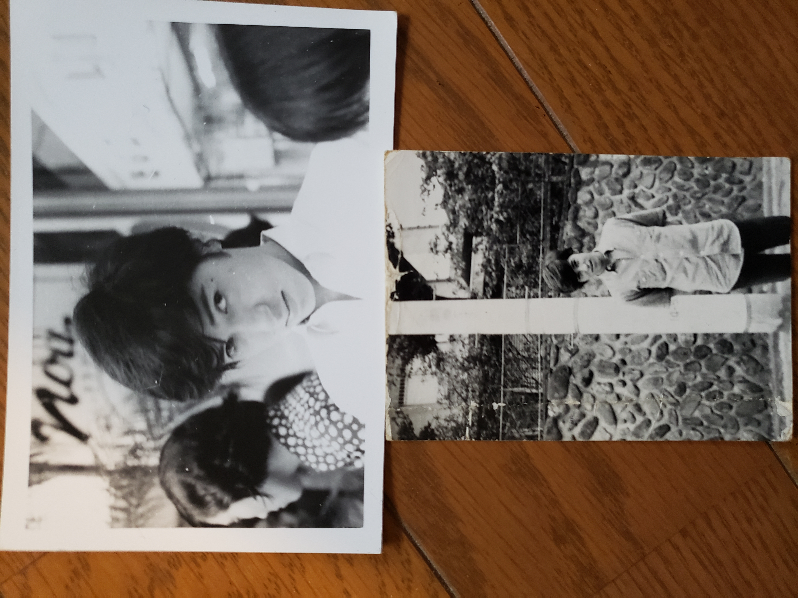
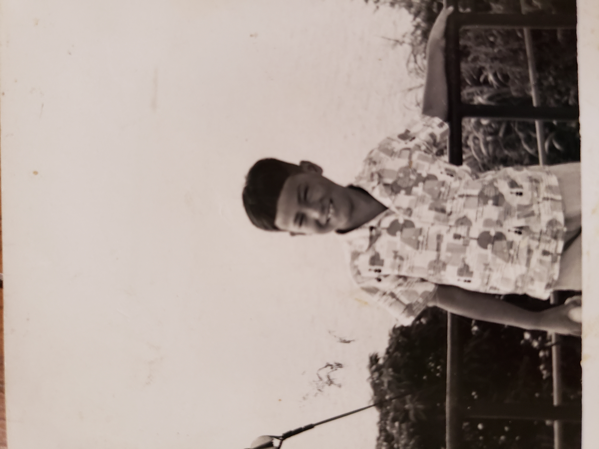
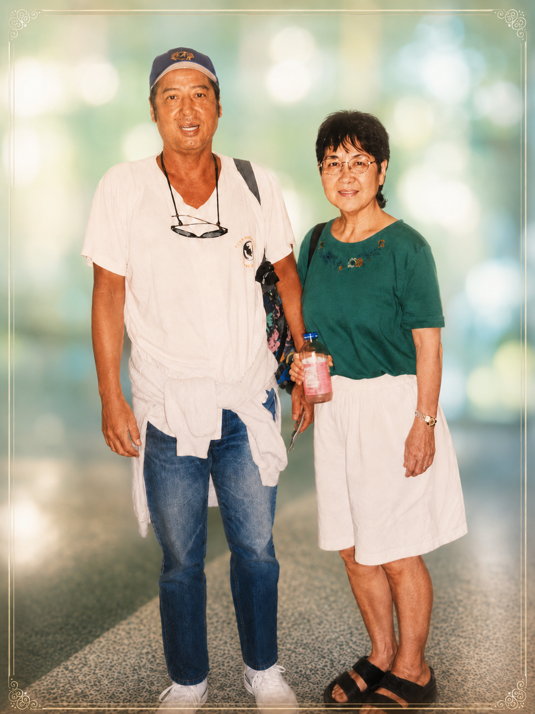
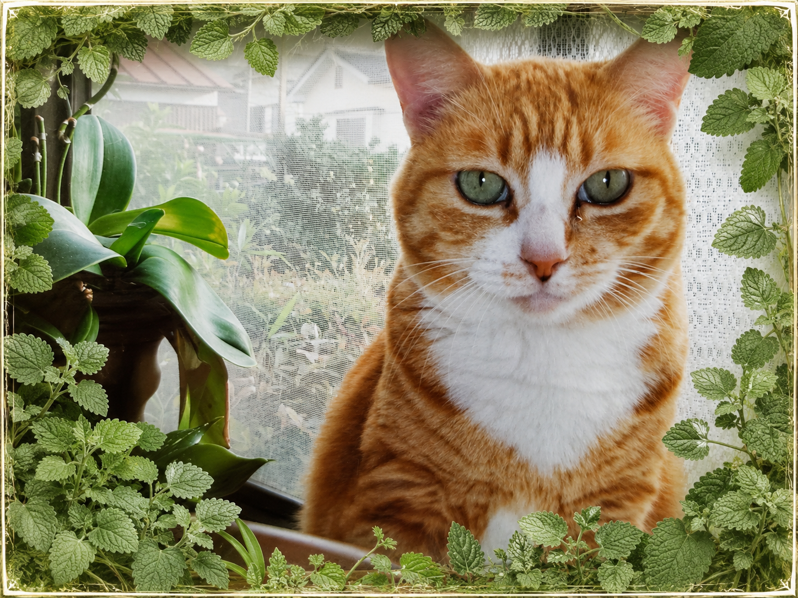

Gallery / ギャラリー
This page shares photos from his music days, Yokohama and Honmoku memories, family memories, travel memories, and small moments that are precious to us.
このページでは、音楽活動時代の写真、横浜・本牧の思い出、家族の写真、 旅行の思い出、そして私たちにとって大切な日常の一場面などを紹介していきます。

Brother
兄の写真と思い出

Childhood
兄の幼い頃

Family Trip
家族旅行の思い出

Cats
猫たちとの思い出